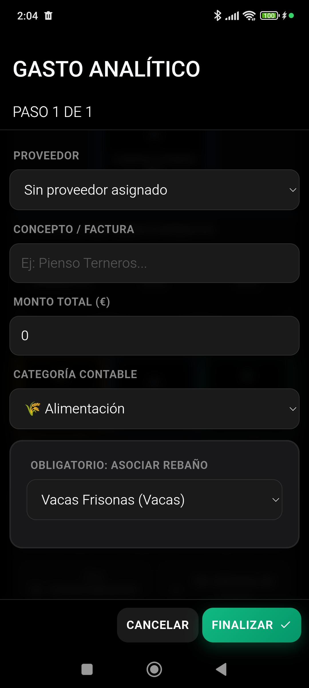

Formulario para control de costes analíticos y facturación.
1. Registro Rápido desde ExPro
En la v4.8.7, registrar los gastos más comunes es más rápido que nunca desde el Hub ExPro.
1
Proveedor
Asociar a empresa/sujeto
➔
2
Concepto
Categoría y coste analítico
➔
3
Imputación
Asignar a rebaño o zona
- Botones Neón: Localiza la sección "COSTES + CUMPLIMIENTO" al final de la pantalla ExPro.
- Selección Directa: Pulsa Gasto Aliment., Gasto Energía o Gasto Fito. para abrir el wizard pre-configurado.
- Imputación Analítica: El sistema asociará automáticamente el gasto al modo (Carne/Leche) y te pedirá seleccionar el rebaño o zona.
2. Pantalla General de Gastos
Para una gestión avanzada o ver el historial, usa el módulo dedicado.
- Acceso: Pulsa Más → Gastos.
- Filtros por Categoría: Usa las pestañas superiores para ver el desglose por Alimentación, Sanidad, Electricidad, Personal, etc.
- KPIs de Registro: La cabecera muestra el total acumulado de la categoría y el número de facturas registradas.
3. Integración en Balances
Todos los gastos registrados se restan automáticamente de tus ingresos en la sección de Informes.
Análisis MOFA: El Margen Sobre el Coste de Alimentación se calcula vinculando tus ventas de leche/carne con los gastos de categoría "Alimentación".
Livestock Manager Premium · v4.8.7 · Guía del Usuario Oficial